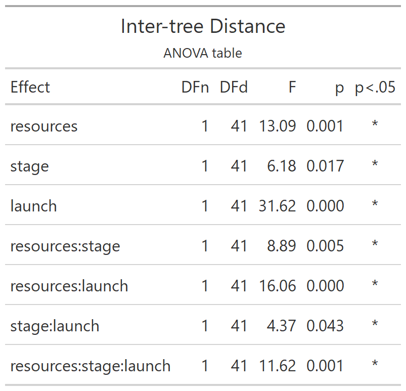
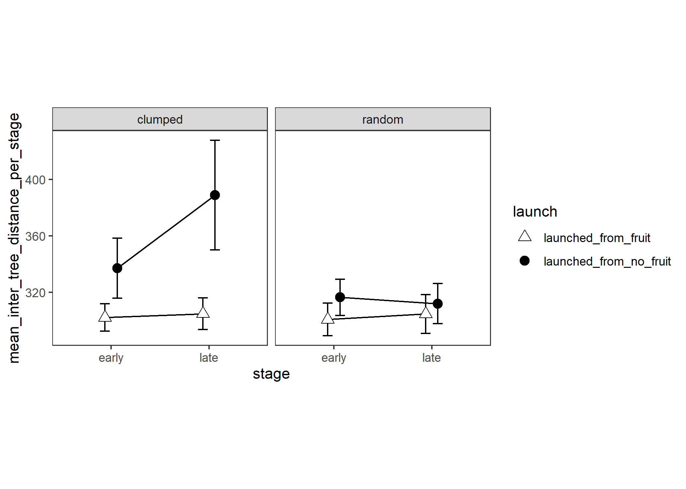

Skip to main content
Foraging: introducing our gaze-contingent eye-tracking paradigm for studying foraging
Show table of contents
Table of contents
1
First things first
Experiment One
2
Introduction
3
Number of trees
4
Trial Duration
5
Number of Revisits Per Trial
6
Number of Revisits Per Fruit
7
Number of revisits grand analysis
8
SANITY CHECKS
9
Retrieval Rate
10
Inter-tree distance
Experiment Two
11
Introduction
12
Number of trees
13
Trial Duration
14
Number of Revisits per Trial
15
Number of Revisits per Fruit
16
Number of revisits grand analysis
17
Retrieval Rate
18
Inter-tree Distance
References
Appendices
A
Appendix A
B
Appendix B
View book source
10
Inter-tree distance
Experiment 1


9
Retrieval Rate
11
Introduction
On this page
10
Inter-tree distance
View source
Edit this page